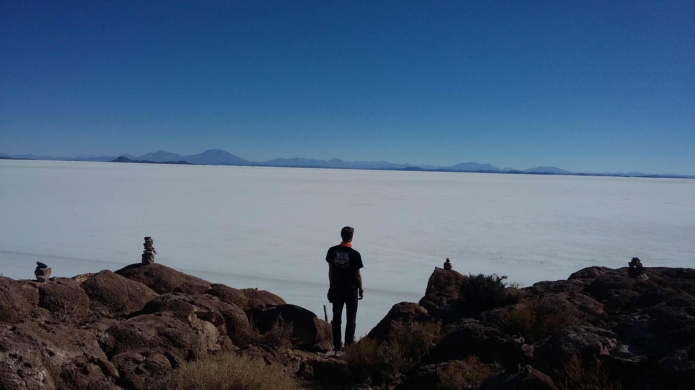
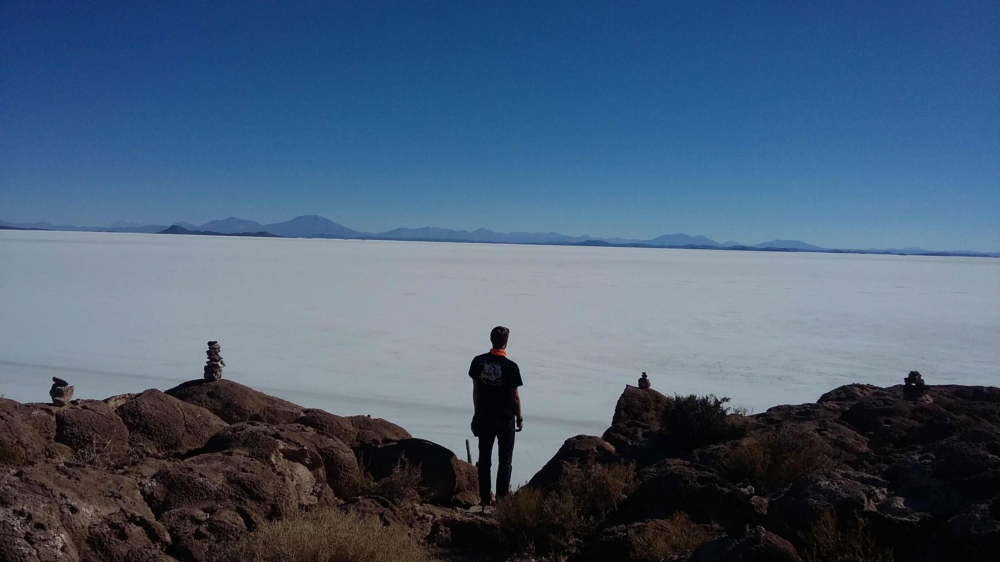

First Week in Asia
May 9th, 2016
I've been in China for a full week, and at this rate it's going to be an incredible summer.
I landed in Hong Kong after a direct flight form San Francisco, where I spent three fantastic days at the Cansbridge Fellowship Conference. The flight was painfully long, as I was sitting next to a two-year-old that audibly hated flying. He sounded like he didn't know how to cry... He would just close his eyes and shriek for a little while every now and again. As brutal as it was to sit through it, I can only imagine how the poor parents were feeling.
When we finally touched down, I had to take a short ferry ride from the airport to Shenzhen. My body had no idea what time it was supposed to be, taking off at 1:10pm, landing at 6:40pm the next day, but only being in the air for 14.5 and gaining 30.5. Luckily, I had two free days to adjust to the time. My office and apartment are both located in the Shekou region of Shenzhen, which I'm really liking. There are lots of expats that live here, so it feels somewhat westernized. There's a Starbucks, McDonald's Pizza Hut, and KFC all in the plaza close to my work. Certainly not what I was expecting.
On the ferry from Hong Kong to Shenzhen I met a family from Seattle that was extremely helpful, adding me to the couchsurfing wechat group and giving me some tips for where to live, what to do, etc. The father (Mike) works with Microsoft as a VP of Global Device Sales and Partnerships, so he had some great suggestions on where to look to get into the startup and tech scene here, which is absolutely massive.
I stayed at an AirBnB for my first four nights, just on a pullout couch in a living room. My two hosts, Sara and Yuki, were very accommodating. We had several meals together, and they laughed at my struggles using chopsticks. The two of them work full-time, so I was on my own during the days. I spent the first day sorting out lots of things - places to eat, grocery stores, bars, banks, shops, then got a haircut and found a place for dry cleaning.
The haircut was quite an experience. I saw the price for "non-members" was 138RMD and my immediate thought was that it was really expensive I quickly realized it's only around $23 Canadian, which is roughly the same as at home. I really needed a haircut before starting work, so I figured I may as well. The staff took my bookbag and put it in a locked closet, then gave me a silk robe to put on over my clothes. They walk me over to an area where there's eight beds all set out and tell me to lie down, I figured they were just going to rinse my hair before cutting, but wow, was I ever wrong. It ended up being a a shampoo, head massage, neck massage, and arm massage. After however long that took, I got a quick haircut, then back for anoher rinse. The whole process was around an hour, and I was even offered coffee and a glass of water. Now I understand why it was so "expensive." Turns out the vast majority of places that cut hair are like this here. Who would've thought.
I didn't do much the next day. I just decided to stay in and fix up my resume page. I blitzed through the HTML & CSS course on Codeacademy, then decided to do some coding from scratch to practice and what better place to do so than my own website. Check out what I changed it to!
Thursday, May 5th, I started work as an intern in the Economics and Reserves department. HR hadn't answered my most recent emails, so I didn't know what time I was supposed to be at the office, which floor I was on, what I was supposed to wear, or what I was doing. I showed up at 8am, and it was a ghost town. I decided to go and grab a bit more for breakfast and head back to the office around 8:45, and then there were lots of people around. The reception knew who I am, and shoed me to my office. I have my own office. Pretty cool. I meet the people I'm going to be working with - Dan and Jingwei, and my manager, John. Seems like a great team to be a part of. Dan showed me around then I spend the rest of the day getting familiar with the company's operations and budget model.
On Thursday night Sara took me to an apartment that had a spare room. Three guys live there and it looked like a great location. The guys seemed like good guys, so I moved in the next day. Even though my bedroom is smaller than my office, the rent is crazy cheap in an area where renting is brutally expensive. The two British guys, Warren and James, needed to pick up some things on Saturday so I tagged along and got to see a real Chinese marketplace — it was awesome. Sunday I went to Huaqiangbei, the largest electronic market in the world and wow, it was unbelievably cool. Any electronic component or device you can imagine was there and was dirt cheap.
Sunday night there was a CouchSurfer meet-up at a jazz bar which was great! I got to meet interesting people from all over, and made some friends that will likely turn into good hiking buddies. I arrived at the meet-up pretty early, so I realized after about two songs that they were playing Michael Buble's Christmas album on repeat... Definitely questionable for May, but to be fair I did stay there and write the majority of this post there.
Well, that's all for my first week in China! My Internet access is quite limited so apologies if I'm slow getting back to you. Cheers!

The cafe with the Christmas music... and the flower giraffe across the street from my AirBnB

View from the roof of my AirBnB. That's my office building on the right!
Newfoundland, Summer 2015
August 20th, 2015
Lake Titicaca and Bolivia
August 3rd, 2015


 



Machu Picchu Trek
July 24th, 2015
By now I had finished up all my classes and work at WaaW, and was starting my few short weeks of travel. The night before I was heading out for my Machu Picchu Trek, it was the "cumplemes" of my host mother's neice (she was one month old). My host mom, Maribel made this remarkable cake for the occasion.
The next morning I had to meet at the main city square at 4:45AM, and in classic Peruvian style the pickup was easily 20 minutes late. We drove out to the start point, got our day packs sorted, and we on our way after a quick breakfast. Day one was tiring, but probably because we had to start so early in the morning. Halfway through the day we began on a straight 8km path to the first campsite (left picture). Near the campsite there was a glacier, but I didn't realize that it was about a 45 minute walk up a steep hill to get there. By the time we went to the glacier and came down, then I was beat.

Day two was an early start again. Wake up call was around 5:30 (still dark out), but the guide came by our tents with a hot cup of coca tea so it really wasn't a bad wake up at all. Day two was by far the hardest day. Starting at roughly 3900m, going up to 4600m, and down to 2800m over a 22km hike definitely took a lot of the energy out of everyone. Everyone in our group had varying levels of fitness, which meant there was a lot of waiting for the group to catch up so the whole day took quite a while. When we got to the peak, we knew it was all downhill from there (literally). On the left is myself with Ricard, Bruno, Richard, and Marc. We found out there was a second glacier off the beaten path, but it was only about a ten minute walk so a few of us headed over there, and the teal colour of the water was incredible!


After walking downhill for quite a while with Bruno and Richard (two English guys), we saw the Spaniards in their underwear getting in a river. At 4400m we ended up going for a dip in absolutely freezing cold water. We finished up and headed down for lunch and the view was astounding. The picture below on the right was taken from our lunch table.

Day two was another night spent at a camp, but at this point the big bulk of the hiking was done. Day three was a flat easy walk down to a point where we got picked up and drove to a small town with a hot spring, and zip-lining. We passed a bunch of small waterfalls and cliff-sides on our downhill walk to the pick-up station. On the night of day three there was a bit of a party at the campsite, as it was our group and several others. They had "Inca Tequila" on sale for 1 sol per shot (40 cents Canadian), along with other drinks. Nothing too crazy went on though, we had booked zip-lining for the next morning.


After zip-lining we took a bus to Hidroelectrica where we got lunch, then took a 10km flat walk to Aguas Calientes, the town you stay in before visiting Machu Picchu. Nothing too special there, really touristy. We grabbed a group dinner then went to bed, because we were meeting at the gates around 5am to go to Machu Picchu for sunrise. We were so disappointed when we got to the top because it was super foggy, but it ended up making it way more memorable. As the sun rose it burned off the clouds, slowly bringing the entire mountain into view. The picture of the little wooden bridge is actually an old Inca Trail, they used to walk across that all the time. Makes my stomach sick just thinking about it. The tressel was on part of the 10km walk from Aguas Calientes, and the valley was looking down from the top of Machu Picchu. The third picture though, is my favourite. I still don't understand how it happened, but that is my shadow in that little circle. Pretty neat.


Trip Around the Sacred Valley
July 14th, 2015
Three friends (Nathalie, Adrian, and Nicky) and I decided to take a weekend trip and go around the sacred valley. Eddy (another friend) had reccommended a route to us, and it was amazing, even with a few bumps along the way. We took a bus from Cusco to Maras, where we rented bikes. Turns out we rented them from the wrong place, and ended up having a fair bit of trouble, one completely broke down partway into the trail and Nicky and Adrian went back to get a new bike. Nathalie and I finished the 6km uphill ride to Morray, which had three massive... whatever these are:


After we wandered around Morray for a little while we had a much nicer bike rider, roughly 10km downhill, back through Maras and into Salineras. I often don't put enough research into places I'm going, which can cause me to miss out on certain things, but at the same time it allows me to be surprised. We turned a corner, and all of a sudden we were at this:

All of this white is salt. This was definitely one of my favourite things I saw over my entire summer. In the picture on the right you can see me standing in the middle of it, and that's the "path" we continued down to get to a road. All the way at the bottom we hopped on a bus to Ollantaytambo where we spent the night. We went to a somewhat questionable restaurant and met a solo traveller, a French guy that was going to school in Chile. We went and grabbed drinks at a small bar, but went to bed early to catch more ruines the next day. We got up early and did Ollantaytambo ruines, then caught a train to Pisac (far right).


After Pisac we went back to Cusco! Pretty good for a two day trip.
Pequeño Viaje
June 22nd, 2015
The past ten days have been wonderful, with a fair share of surprises.
Surprise #1: I went bungee jumping. If you know me well, you’ll know that I have a slight fear of heights. I always think people should go out of their comfort zones, so I went 405 ft straight up out of mine. What an experience that was. The next day, I left for Guayaquil, Ecuador to meet up with a friend from Canada. After two days in Guayaquil, I was planning on continuing my travels to Máncora, Peru.
Surprise #2: I was able to get through customs without a hiccup completely in Spanish! Even though I know I am able to have broken conversations with people it was great to actually do something with that knowledge. Every time I speak with anyone from a Spanish speaking country, the minute they find out I speak some Spanish they say “entonces ahora hablamos en español” and from then on our entire conversation is in Spanish.
Surprise #3: A friend I have had since I was 5 years old, Ben, messaged me the night before I was planning on leaving saying he was coming to Guayaquil the next day so I stayed and hung out with him for two days! We rented bikes and biked to Isla Santay, which was absolutely gorgeous. His birthday was his second day in Guayaquil, so I wanted to stay and celebrate his birthday with him.
Surprise #4: Bars/clubs in Guayaquil are all closed on Sundays, most are closed on Mondays, and the ones that are open on Monday all close at midnight. We walked into the only bar we could find with any people in it – little did we know it was a Karaoke bar. Certainly not how any of us expected his 20th birthday party to turn out.
Surprise #5: Ben was travelling with a friend of his, but after meeting up with me he changed his travel plans and came with me to Máncora! We stayed at Loki, a bit of a party hostel. In Máncora there is a girl from Newfoundland living there so the three of us hung out quite a bit and she showed us around town, setting us up with some surfing lessons.
Surprise #6: When I went surfing, I was able to stand up and ride the wave on my very first attempt. Surfing is so much fun – I could definitely see myself living in a surfing spot at some point in my life. I was sore all over my body afterwards. My ribs hurt from lying on the board, my shoulders from paddling, but feet from rocks, and neck from looking up while paddling.
Surprise #7: On Friday, June 19th, I received an email from the Ivey School of Business with an offer for admission for the fall of 2015 to the HBA program! Starting September, I’ll be commencing the business portion of my dual degree.
Surprise #8: All of a sudden, I’ve been in South America for 7 weeks. I’m over halfway through my time here. I’m finished all of the intermediate Spanish courses, so I just have advanced remaining and it’s only the subjunctive verbs (which are supposed to be hard, but the book is quite small). After I finish all of the lessons, I may continue with some practical classes, but I may also just try and practice on my own.
I’m quite excited to get back to Cusco, I realized how much I love the city after leaving. As time goes on, I learn more and more about Peru. It’s quite frustrating because I don’t have the time (or money) to do everything I would like to do though. I suppose that just means I’ll have to come back sometime.
Until next post!


Looking down from the bungee jump platform, the view from a lighthosue in Guayaquil (440 stairs up), and my hostel in Máncora, picture taken in a hammock
First thoughts in Peru
June 5th, 2015
I’ve been in Peru for just about one month now, and it’s hard to believe I’m a third of the way through my time here. Apologies for taking so long to get this first post up, but I wanted to create my own website first, but just ended up procrastinating until now.
So what am I doing in Peru? I’m primarily here to learn Spanish and also working as the sports coordinator at an after school program called WaaW. On top of these two things (which keep me busy Monday-Friday from 8:00am-7:00pm) I’m taking one-on-one salsa lessons, attending weekly cooking classes, and playing Ultimate Frisbee each Sunday! Almost everything I am doing is coordinated through a small organization called FairServices. It’s really a great organization, and very focused on fairness and providing opportunities to locals. For more information check out their website or get in touch with me!
My Peruvian family has been amazing to me. My first day here they took me to a relative’s birthday party, which was definitely a great way to start my trip. The family turns out to be quite musical, and whenever there is a party in Peru there is always dancing. Something that I found quite interesting was how seriously Karaoke is taken here. People really, really enjoy it – it’s great. My house is located right next to the airport, but it’s really not that bad. There are no flights at night, thank god.
Luckily, I was able to avoid getting sick from the altitude. I did have one bout of sickness, but I am pretty sure it was from food poisoning. I was quite sick, but only for one night. It makes for a bit of a funny story though – I was on the bus, and a lot of the buses here are basically converted minivans, but there are three seats up front. One is for the driver, then two more for whoever wants to sit there. Before the ride I was feeling a bit queasy so I figured I would sit up front. Someone else got in, so I was sitting right next to the bus driver. A few minutes later, I vomited all over my bookbag and myself. I muttered “necesito bajar” trying to tell the bus driver I needed to get off. He responded (translated) “I know, you can get off at the next stop” and handed me a little bit of toilet paper. I really thought it was so bizarre how nonchalant the driver was, but I got off at the next stop and made my way back to my house. The next day I was fine, and was able to attend my salsa lesson!
Cusco is an extremely poor city, with only 9% upper class, and 12% middle class, but nevertheless Cusco is really gorgeous with tons of history, culture, and pride. The population is a bit greater than half a million, but there are 2.5 million tourists each year (so I’ve been told). The voluntourism industry is in Peru is enormous. On my flight here there was three large groups of volunteers around my age (one was from Western!), and while I’ve been here I constantly run into voluntourists. Just the other night we went out to dinner to celebrate someone’s birthday and there was a table of roughly 12 people about my age (possibly younger) all wearing scrubs and speaking english. I find it absolutely shocking to be quite honest.
The food here has been pretty good too, for the most part. Cuscaneans eat an absurd amount of chicken and rice. I don’t know if there has been a day yet that I haven’t had rice at least once. My homestay mother is a very good cook though, so most of the time the food is perfectly fine. There is quite a bit of Peruvian cuisine that is delicious though. My favourite so far is definitely Picaronnes. They are basically donuts, but they are made out of sweet potato, pumpkin, and drizzled with honey. So they’re really not that bad for you, and are so delicious. I have yet to try many of the staple dishes though, such as cuy (guinea pig). I’m sure that will be interesting.
The culture here is quite different from Canada, obviously. Here’s some examples: when greeting or saying goodbye, it is always a kiss on the cheek with women and a handshake with men. It’s not rude to call someone fat. Everyone loves dancing, and they often will have dancing class in schools. If kids are caught having a cell phone in class, the teacher takes it and keeps it until DECEMBER. Many of the bars are open until 5:00am. Clubs are called Discos or Discotecas. It is mandatory to vote, and when it is the voting period all of the bars and discotecas are closed. These are just a few examples of the cultural differences between here and Canada, many of which I find very interesting.
I am enjoying my time here immensely, while of course missing home. That’s all for now, I’m going to try and post more often from now on, so please check back for more posts in the future!
Here's a few pictures from my trip so far.

Sacsaywaman — somehow I managed to get in for free! The right was taken on the flight from Lima to Cusco, spectacular scenery